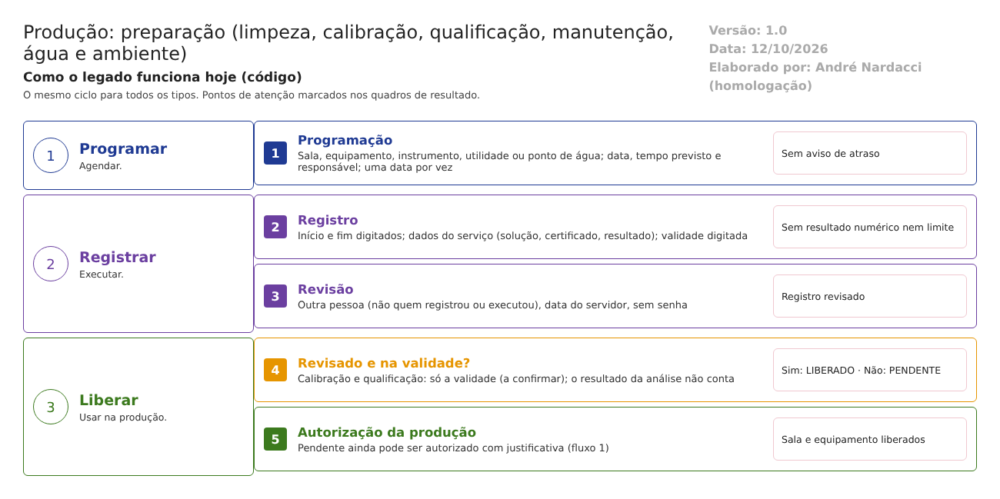

Objetivo
Este documento descreve a preparação na Produção do LabMedSys: a programação e o registro dos cuidados que deixam salas, equipamentos, instrumentos e pontos de água prontos para produzir. - Limpeza. - Calibração. - Qualificação. - Manutenção preventiva e corretiva. - Lubrificação. - Análise de ambiente e de pontos de água.
Esses registros alimentam as autorizações do fluxo 1: um item com registro vencido aparece como pendente.
Pela norma, equipamentos e áreas precisam estar limpos, calibrados e qualificados antes de cada operação (RDC 658/2022, arts. 105, 110, 148 e 195), e os controles ambientais precisam ser registrados (art. 198).
Foi montado a partir do código do sistema legado. O que depende da prática da área está marcado como a validar. Os casos de teste estão no fim.
Escopo
- Programação e Registro de: Limpeza (e Limpeza Avulso), Calibração, Qualificação, Manutenção Preventiva, Lubrificação, Análise de Ambiente, Análise de Pontos de Água.
- Registro de Manutenção Corretiva.
- Programação de Calendário de Pessoal.
- Etiqueta de limpeza, LogBook e RP14 (equipamento, manutenção e limpeza).
Fora do escopo:
- O cadastro de ambientes, equipamentos, instrumentos, utilidades e pontos de água, que fica no Principal.
- As autorizações (fluxo 1).
- O monitoramento de água e ambiente feito pelo CQ (4.controle_qualidade/fluxos/agua-ambiente.md), usado aqui só para comparar.
Nomes das telas: como aparecem no menu ou no alto de cada tela. Os caminhos de código são relativos a 2.producao/app/. Para encurtar:
- Prep/ = LaboSys_UI/preparacao/;
- BLL/ = LaboSys_BLL/;
- DAL/ = LaboSys_DAL/;
- Tab/ = Hsolutions.Producao.DB/Tables/.
Visão geral do processo

Todos os tipos seguem o mesmo ciclo:
- Programação: o responsável agenda o serviço. - Define a sala, o equipamento, o instrumento, a utilidade ou o ponto de água. - Informa a data programada, o tempo previsto e o responsável.
- Registro: quem executou informa: - o início e o fim; - os dados próprios do serviço: na limpeza, os produtos e lotes anterior e seguinte e a solução usada; na calibração, o certificado, a ordem de serviço e a empresa; na análise, o executor, o chefe e o tipo de resultado; - a validade.
- Revisão: outra pessoa revisa o registro. A data da revisão vem do servidor.
- Com o registro revisado e dentro da validade, o item aparece como LIBERADO na autorização da produção. Se não, aparece como PENDENTE.
Descrição funcional das etapas
Programação
Regras de negócio
- RN001 – Cada tipo tem uma programação com data programada, tempo previsto e responsável (
Tab/TBL_PROGRAMACAO_*.sql): - limpeza: sala, equipamento ou instrumento, e tipo de serviço;
- calibração: equipamento ou instrumento;
- qualificação: equipamento, instrumento ou utilidade;
- manutenção preventiva: equipamento ou utilidade;
- análise de ambiente: sala;
- análise de ponto de água: ponto.
- RN002 – A programação não tem periodicidade: cada data é lançada uma a uma.
- RN003 – Não foram encontrados avisos de programação atrasada nem de validade perto do fim no código da preparação. A confirmar no teste.
- RN004 – A Programação de Calendário de Pessoal registra ausências do profissional, com início, fim e motivo (
Tab/TBL_PROGRAMACAO_CALENDARIO_PESSOAL.sql). A validar: onde é usada.
Telas do sistema
| Módulo | Tela | Finalidade |
|---|---|---|
| Produção | Programação de Limpeza / Calibração / Qualificação / Manutenção Preventiva / Lubrificação | Agendar o serviço |
| Produção | Programação de Análise de Ambientes / de Pontos de Água | Agendar a coleta |
| Produção | Programação de Calendário de Pessoal | Ausências |
Registro e revisão
Regras de negócio
- RN005 – Limpeza (
Prep/registro_limpeza_ed.aspx.cs:688-702). O registro guarda: - início e fim;
- produto e lote anterior e seguinte;
- a solução usada, com validade e lote;
- observação;
- validade da limpeza.
Mensagens: "A Data Hora Início não pode ser maior que a data atual!", "A Validade não pode ser menor que a data atual!", "A Validade não pode ser inferior a Data de Finalização!".
- RN006 – Limpeza Avulso: a mesma limpeza, sem programação (Tab/TBL_REGISTRO_LIMPEZA_AVULSO.sql). Ela também conta para liberar a sala (BLL/bllAutorizacaoAmbienteProducao.cs:183-191).
- RN007 – Calibração e qualificação:
- certificado ou documento, ordem de serviço, empresa e validade, todos obrigatórios;
- o certificado não pode ser anterior ao fim do serviço, e a validade não pode ser anterior ao certificado (Prep/registro_calibracao_ed.aspx, registro_qualificacao_ed.aspx, validações);
- não há campo de resultado da calibração: aprovado, reprovado, desvio encontrado.
- RN008 – Manutenção preventiva e corretiva: início, fim, ordem de serviço, empresa e observações. A preventiva tem validade; a corretiva não (Tab/TBL_REGISTRO_MANUTENCAO_*.sql).
- RN009 – Análise de ambiente e de ponto de água:
- início, fim e validade;
- executor e chefe responsáveis;
- um tipo de resultado, escolhido de uma tabela de apoio livre (Tipos de Resultados de Análise);
- observação.
- Não há resultado numérico nem limite de alerta ou de ação (Tab/TBL_REGISTRO_ANALISE_AMBIENTE.sql, TBL_REGISTRO_ANALISE_PONTO_AGUA.sql).
- RN010 – Datas: início e fim são digitados, com início não posterior a hoje. A validade é digitada por quem registra, não calculada por uma regra.
- RN011 – Revisão:
- o revisor é o usuário logado, e a data da revisão vem do servidor;
- "O Responsável pela Revisão não pode ser igual ao Responsável pelo Registro ou Executor!" (Prep/registro_limpeza_ed.aspx.cs:196-205; mesma validação em calibração e qualificação);
- o revisor não confirma com senha.
Telas do sistema
| Módulo | Tela | Finalidade |
|---|---|---|
| Produção | Registro de Limpeza / Registro de Limpeza Avulso | Registrar e revisar a limpeza; etiqueta |
| Produção | Registro de Calibração / Qualificação | Registrar o certificado e revisar |
| Produção | Registro de Manutenção Preventiva / Corretiva / Lubrificação | Registrar e revisar |
| Produção | Registro de Análise de Ambiente / de Pontos de Água | Registrar o resultado e revisar |
Liberação para produzir
Regras de negócio
- RN012 – Sala liberada: tem limpeza (programada ou avulsa) revisada e com validade em dia e análise de ambiente revisada e com validade em dia (
DAL/dalRegistroLimpeza.cs:166-174;BLL/bllAutorizacaoAmbienteProducao.cs:200-208). - RN013 – Ponto de água liberado: tem a última análise com validade em dia (
BLL/bllRegistroAnalisePontosAgua.cs:79-84). - RN014 – Equipamento e instrumento liberados: cada tipo de registro (qualificação, calibração, limpeza, manutenção preventiva, lubrificação) com validade em dia (fluxo 1, RN009).
- Limpeza, manutenção preventiva e lubrificação exigem o registro revisado.
- Para calibração e qualificação, a consulta encontrada confere só a validade (
DAL/dalProgramacaoCalibracao.cs,DAL/dalRegistroQualificacao.cs). A confirmar no teste. - RN015 – O resultado da análise não conta. Nenhuma regra usa o tipo de resultado (RN009). Uma análise de ambiente ou de água com resultado ruim, mas revisada e na validade, libera a sala ou o ponto.
- RN016 – Um item pendente ainda pode ser autorizado na produção com justificativa (fluxo 1, RN009).
Telas do sistema
A situação de cada item aparece nas telas de autorização do fluxo 1 (Autorização Ambientes, Equipamentos, Instrumentos e Pontos de Água x Produção).
Consultas e etiquetas
Regras de negócio
- RN017 – A etiqueta de limpeza imprime o registro de limpeza, para identificar o equipamento ou a sala (
Prep/registro_limpeza_etiqueta.aspx.cs). - RN018 – O LogBook e o RP14 listam, por equipamento e período, os registros de manutenção e limpeza (
LaboSys_UI/relatorios/LogBook.aspx.cs;rp14_equipamento_manutencao_limpeza_lst.aspx).
Telas do sistema
| Módulo | Tela | Finalidade |
|---|---|---|
| Produção | LogBook (relatório) | Livro de registro do equipamento |
| Produção | RP14 - Equipamento Manutenção e Limpeza | Relatório por equipamento |
Pontos de atenção
1. O resultado da análise de água e de ambiente não é conferido (RN009, RN015). - Vale a análise revisada e dentro da validade, qualquer que seja o resultado. - Não há valores medidos nem limites de alerta e de ação (art. 198).
2. Monitoramento de água e ambiente em dois módulos (RN009).
- O CQ tem o seu, com laudo, e o resultado dele não chega à Produção (4.controle_qualidade/fluxos/agua-ambiente.md).
- A Produção tem outro, sem resultado numérico.
- É repetição de telas e tabelas (análise transversal).
3. Calibração e qualificação sem resultado (RN007). Um instrumento reprovado na calibração não tem como ser registrado como reprovado (art. 110).
4. Validade digitada (RN010). Quem registra decide até quando vale. Não há prazo por tipo de equipamento ou de sala.
5. Sem avisos de atraso (RN003). Programação vencida ou validade perto do fim não geram alerta.
6. Revisão sem senha (RN011). A regra de que o revisor é outra pessoa existe, mas a revisão não pede confirmação.
7. Calibração e qualificação podem liberar sem revisão (RN014). A confirmar no teste.
8. Bom controle a manter: o ciclo programação, registro e revisão por outra pessoa, ligado à liberação na autorização (RN011 a RN014).
Casos de teste
Dados:
- A sala, o equipamento, o instrumento e o ponto de água TESTE do Principal, ligados ao lote padrão TESTE (fluxo 3).
- Uma solução de limpeza TESTE.
- Um tipo de resultado de análise TESTE REPROVADO.
- Usuários: t.admin (executa e registra) e t.semadmin (revisa).
| Caso | O que fazer | Resultado esperado |
|---|---|---|
| CT-PRO-057 | Programar uma limpeza da sala TESTE |
Programação gravada (RN001) |
| CT-PRO-058 | Registrar a limpeza com início amanhã | "A Data Hora Início não pode ser maior que a data atual!" (RN005) |
| CT-PRO-059 | Registrar a limpeza com validade ontem | "A Validade não pode ser menor que a data atual!" (RN005) |
| CT-PRO-060 | Revisar o registro de limpeza com o mesmo usuário que registrou | "O Responsável pela Revisão não pode ser igual ao Responsável pelo Registro ou Executor!" (RN011) |
| CT-PRO-061 | Registrar a limpeza sem revisão; abrir a Autorização Ambientes da produção TESTE |
Limpeza PENDENTE (RN012) |
| CT-PRO-062 | Revisar a limpeza com t.semadmin; abrir de novo a autorização |
Limpeza LIBERADO (RN012) |
| CT-PRO-063 | Registrar e revisar uma análise de ambiente com o resultado TESTE REPROVADO; abrir a autorização |
Pela norma, sala bloqueada. Registrar se aparece LIBERADO (RN015, ponto 1) |
| CT-PRO-064 | Fazer o mesmo com uma análise de ponto de água | Registrar se o ponto aparece LIBERADO (RN013, RN015) |
| CT-PRO-065 | Registrar uma calibração do instrumento TESTE sem revisão; abrir a Autorização Instrumentos |
Registrar se aparece LIBERADO sem revisão (RN014, ponto 7) |
| CT-PRO-066 | Registrar a calibração com validade anterior à data do certificado | "A Data da Validade não pode ser menor que a Data do Certificado!" (RN007) |
| CT-PRO-067 | Procurar como registrar uma calibração reprovada | Registrar se não há como (RN007, ponto 3) |
| CT-PRO-068 | Deixar uma programação de limpeza passar da data sem registro; procurar aviso | Registrar se não há aviso (RN003, ponto 5) |
| CT-PRO-069 | Registrar uma limpeza avulsa revisada da sala TESTE |
Conta para liberar a sala (RN006) |
| CT-PRO-070 | Registrar uma manutenção corretiva do equipamento TESTE |
Gravada, sem validade (RN008) |
| CT-PRO-071 | Imprimir a etiqueta da limpeza e o LogBook do equipamento TESTE |
Etiqueta e livro com os registros (RN017, RN018) |
| CT-PRO-072 | Comparar a análise de ambiente da sala TESTE na Produção com a do CQ |
Registrar se são independentes (ponto 2) |
Prioridade (testes por risco): CT-PRO-063, 064, 065 e 067 primeiro. Eles tocam: - a sala e o ponto de água liberados com resultado ruim; - a calibração sem revisão; - o instrumento reprovado na calibração.